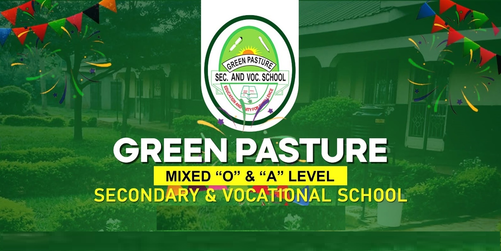

Secondary & Vocational · est. 2001
Musoto, Nabitiri Parish · Mbale City
Green Pasture Secondary & Vocational School
Uganda's first free secondary school in Mbale, opened in 2001 to give youth who had dropped out for lack of school fees a second chance. Students combine academic study with over 20 vocational skill areas, supported by 10+ industry partnerships and a 95% graduate-to-employment or further-education rate.
Visit school site
greenpasturesecondary.sc.ug